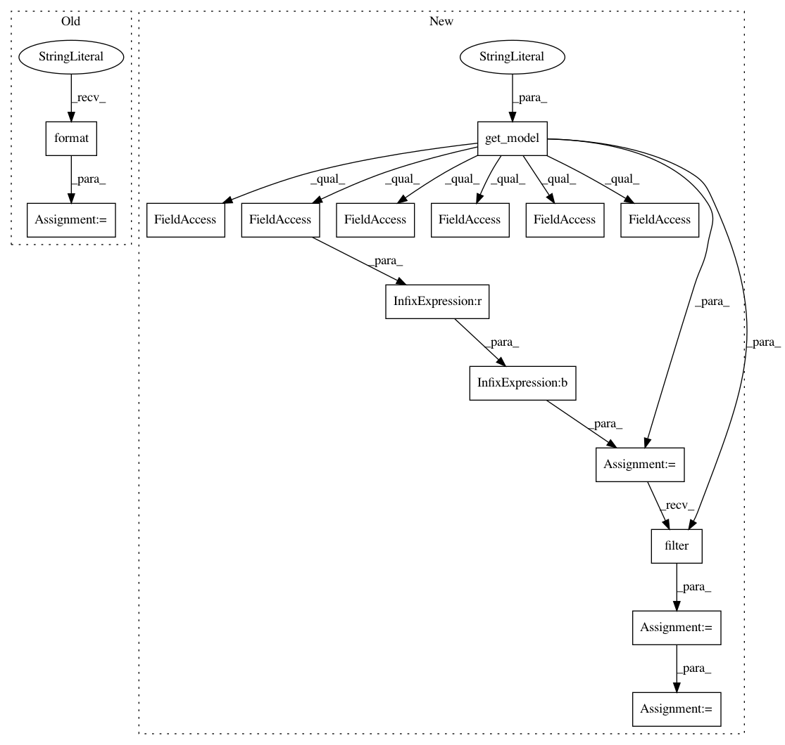

a2e45b8fdde315b756691b4ae573ad55f55dc002,homeassistant/components/history.py,,get_significant_states,#Any#Any#Any#,39
Before Change
where += "AND entity_id = ? "
data.append(entity_id.lower())
query = ("SELECT * FROM states WHERE {} "
"ORDER BY entity_id, last_updated ASC").format(where)
states = (state for state in recorder.query_states(query, data)
if _is_significant(state))
After Change
as well as all states from certain domains (for instance
thermostat so that we get current temperature in our graphs).
states = recorder.get_model("States")
query = recorder.query("States").filter(
(states.domain.in_(SIGNIFICANT_DOMAINS) |
(states.last_changed == states.last_updated)) &
((~states.domain.in_(IGNORE_DOMAINS)) &
(states.last_updated > start_time)))
if end_time is not None:
query = query.filter(states.last_updated < end_time)
if entity_id is not None:
query = query.filter_by(entity_id=entity_id.lower())
states = (
state for state in recorder.execute(
query.order_by(states.entity_id, states.last_updated))
if _is_significant(state))
return states_to_json(states, start_time, entity_id)
In pattern: SUPERPATTERN
Frequency: 3
Non-data size: 15
Instances
Project Name: home-assistant/home-assistant
Commit Name: a2e45b8fdde315b756691b4ae573ad55f55dc002
Time: 2016-07-02
Author: rhooper@toybox.ca
File Name: homeassistant/components/history.py
Class Name:
Method Name: get_significant_states
Project Name: home-assistant/home-assistant
Commit Name: a2e45b8fdde315b756691b4ae573ad55f55dc002
Time: 2016-07-02
Author: rhooper@toybox.ca
File Name: homeassistant/components/history.py
Class Name:
Method Name: get_states
Project Name: home-assistant/home-assistant
Commit Name: a2e45b8fdde315b756691b4ae573ad55f55dc002
Time: 2016-07-02
Author: rhooper@toybox.ca
File Name: homeassistant/components/history.py
Class Name:
Method Name: state_changes_during_period